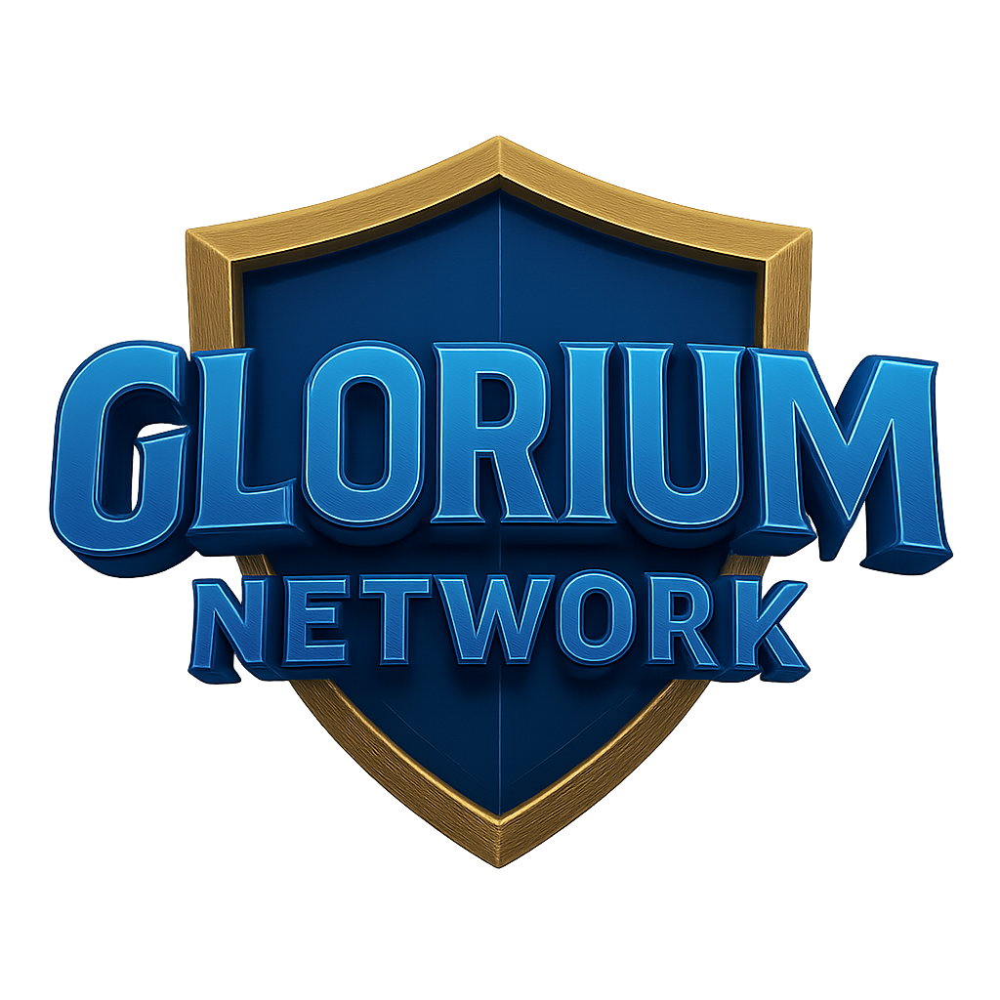

Survival OP • 1.10 - 1.21 • Java & Bedrock
Glorium Network no es solo un servidor de Minecraft; es una experiencia inmersiva diseñada para jugadores que buscan más allá de lo convencional.
Nacido de la fusión entre la creatividad técnica y el amor por el Survival Clásico, ofrecemos un entorno seguro, justo y libre de lag para las versiones 1.10 - 1.21 en Java y Bedrock.
Leer NormasEn el corazón de nuestro servidor están los jugadores. Fomentamos un ambiente no-tóxico y competitivo sanamente, donde cada construcción y cada alianza cuenta.
Contamos con eventos semanales, torneos PVP y un equipo de Staff siempre activo para moderar y ayudar en tu aventura.
Unirse al DiscordUn sistema de economía único y justo diseñado para el comercio global. ¡Consigue infinidad de dinero, crea tiendas y domina el mercado del servidor!
Rompe las barreras de la plataforma. En Glorium, los jugadores de Java y Bedrock conviven en el mismo mundo. Juega con tus amigos sin importar si están en PC, móvil o consola.
Tu base es tu fortaleza. Contamos con piedras de protección muy variadas para que tus construcciones estén 100% seguras mientras exploras el mundo. ¡Juega tranquilo!